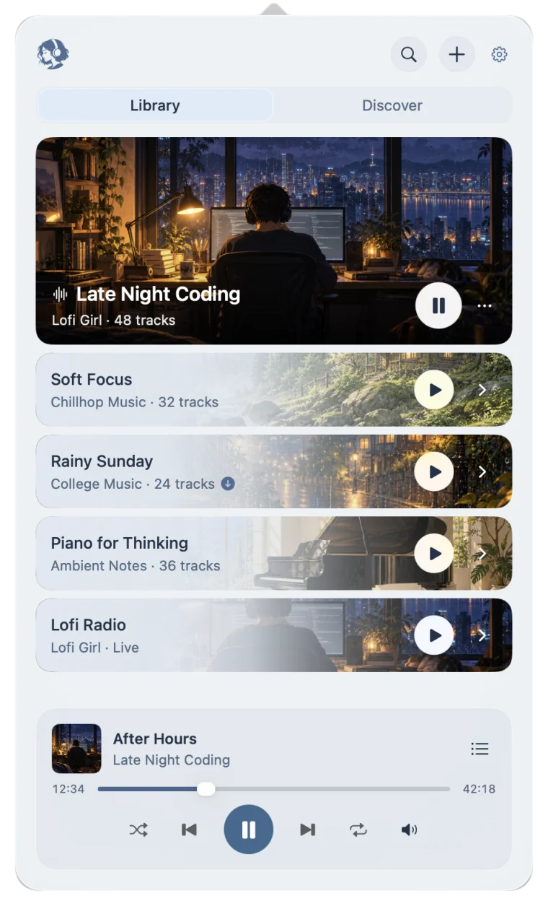
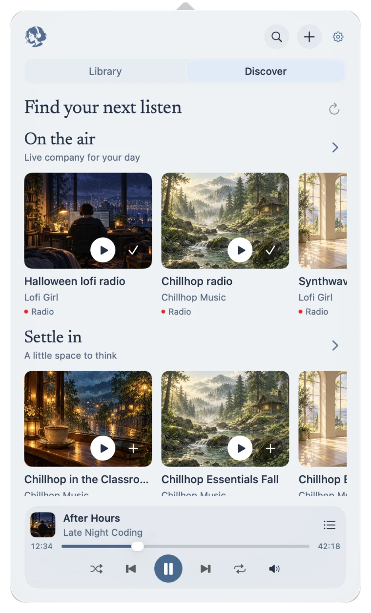

Just the audio.
Listen without keeping a video player or browser tab running alongside your work.
A native macOS menu bar player for playlists, long mixes, and live radio. Listen in the background, without ads.
DownloadFor macOS 26 and later · Apple Silicon
Start a playlist, close the panel, and carry on. geet keeps playing in the background, one click away in your menu bar.
Pause or skip with your Mac’s media keys. Come back to your mix right where you left it.

Your favourites, all together.
Long listens. Pick up where you left off.
Press play and let the station take over.

Discover brings together curated playlists, mixes, and live radio, with fresh selections added frequently.
Find a little focus, company for the afternoon, or a station to leave on all evening. Preview anything, then save your favourites to your library.
Designed to keep resource use and battery impact low. Built for the music you leave on, without the ad breaks.
Listen without keeping a video player or browser tab running alongside your work.
A lightweight native app, designed to keep resource use and battery impact low through long listening sessions.
Let a playlist run or settle into a long mix. Your background music stays uninterrupted by ads.
geet requires macOS 26 or later. It’s currently tested on Apple Silicon. Intel Macs haven’t been validated yet.
Yes. Add a public or unlisted YouTube playlist or video, including long mixes and live radio. Private playlists aren’t supported.
The curated selection is updated frequently. Open Discover and refresh to find the latest playlists, mixes, and radio stations, without updating the app.
No. There’s no geet account or YouTube sign-in. Your library stays on your Mac, and geet has no analytics.
For macOS 26 and later · Apple Silicon
Free and open source. Release notes